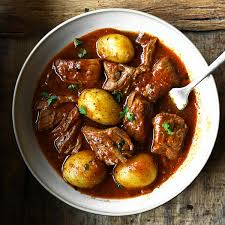

Home
Potato Stew

Description
A potato stew is a comforting, hearty dish featuring tender-cooked potatoes simmered in a flavorful broth or sauce
Ingredients
- Potatoes
- Tomatoes
- Liquid
- Spices
Steps
- Heat 2 to 3 tablespoons of oil in a pot over medium heat
- Add the chopped tomatoes and cook until they soften and form a thick paste.
- Toss in the potato chunks and cubed carrots, stirring well so they coat and absorb the spice mixture.
- Pour in just enough water or stock to barely cover the potatoes. Bring to a boil, then lower the heat, cover the pot, and let it simmer for 15–25 minutes until the potatoes are fork-tender and the sauce thickens naturally from the potato starch.